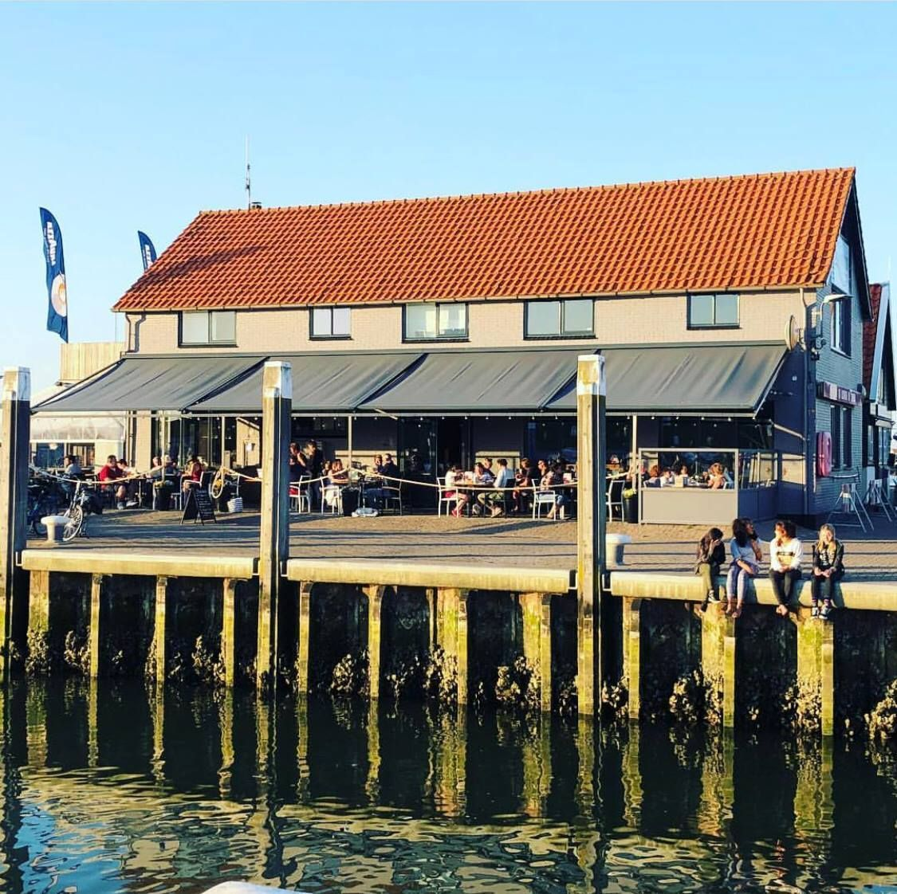
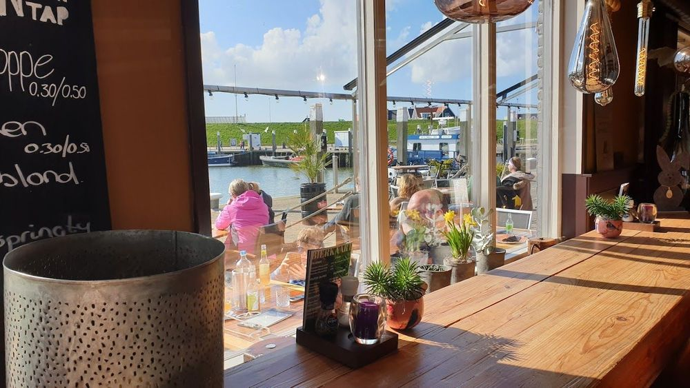
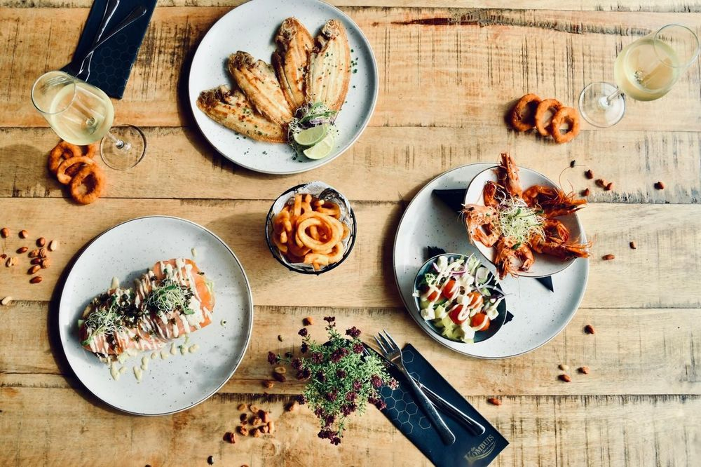
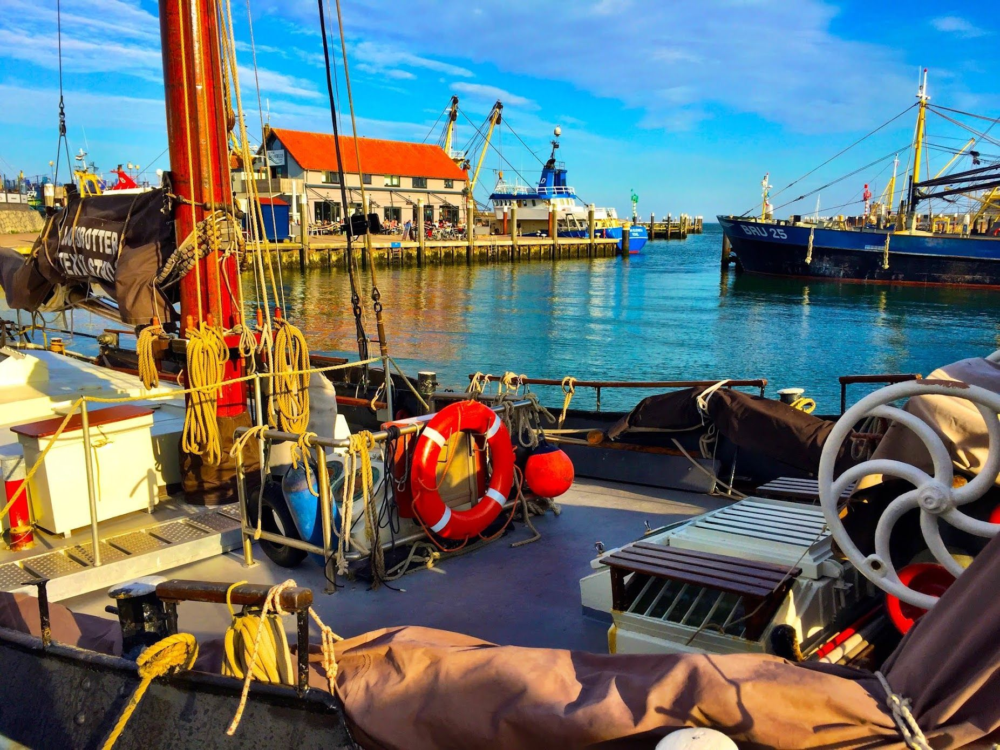
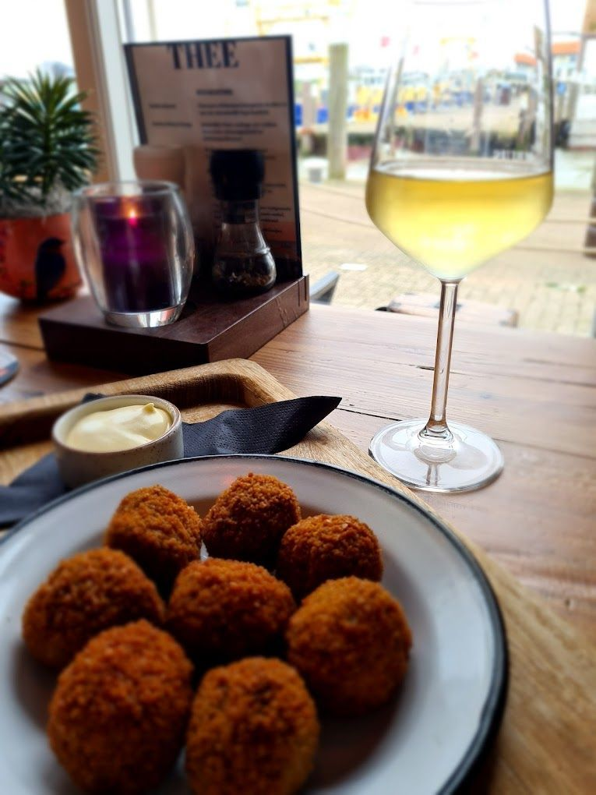
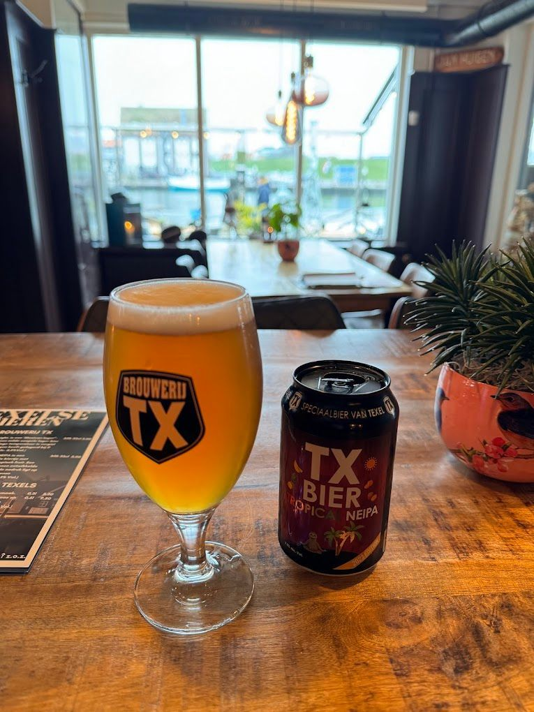
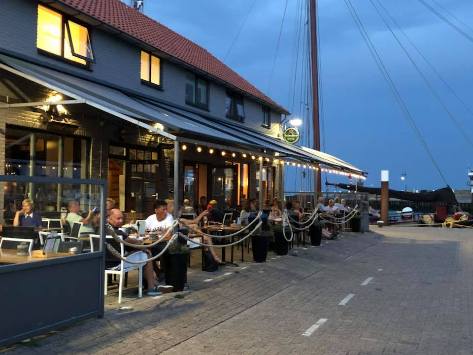
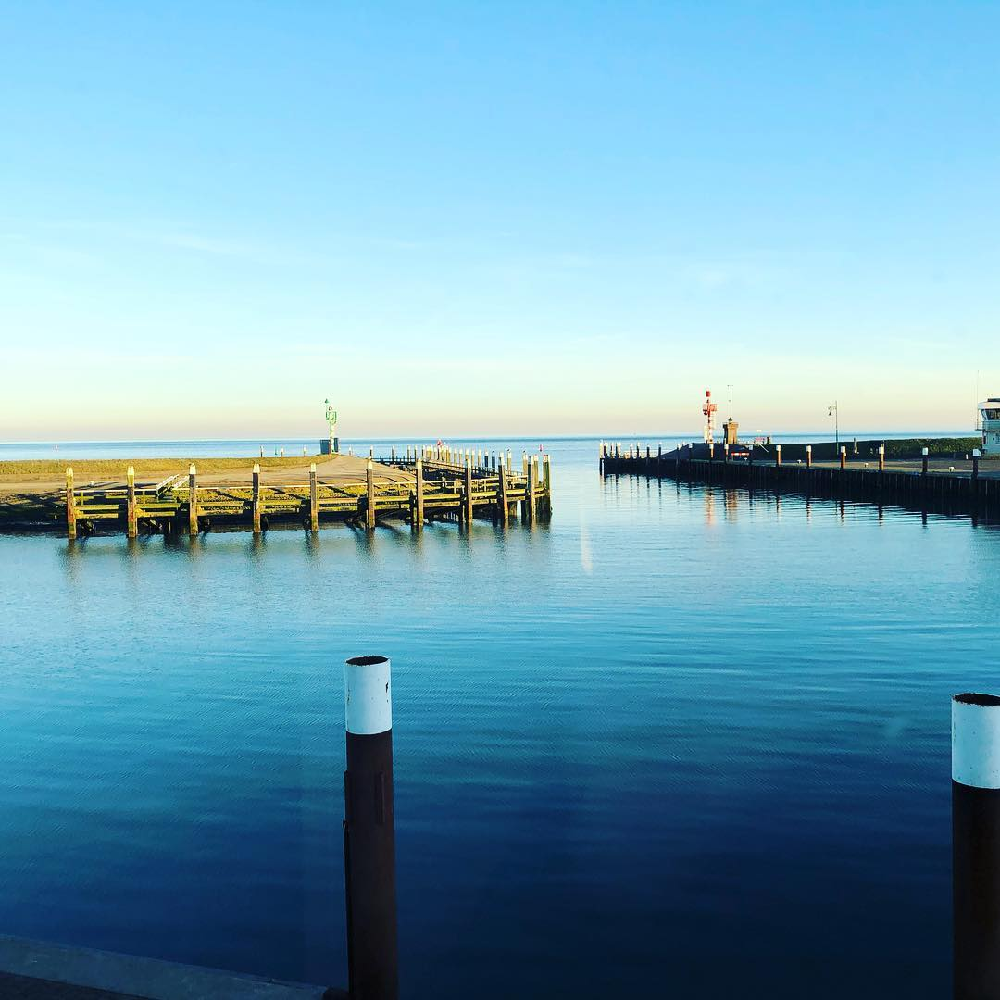

De Kombuis
Eetcafé in de vissershaven van Oudeschild. Uit de wind op het terras, met uitzicht over het water.
Ma t/m do 10:00 - 17:00, vr t/m zo 10:00 - 20:00Haven 10, Oudeschild
Alle tijden & routeAan de haven, uit de wind
Eetcafé De Kombuis ligt sfeervol in de vissershaven van Oudeschild.
Het terras ligt op het zuiden, waardoor je bijna altijd uit de wind zit. Zo kun je al vroeg in het voorjaar ontspannen buiten zitten! Terwijl je geniet van een drankje en/of hapje, kijk je uit over de zee. Dat nodigt natuurlijk uit om een visgerecht te proeven.
De vis is afkomstig van eigen vloot. Ook de andere ingrediënten zijn zo veel mogelijk van lokale leveranciers. Bij De Kombuis eet je daarom altijd vers!
- Vis van eigen vloot
- Lokale ingrediënten
- Rolstoelvriendelijk
- Gratis wifi







Menukaart
Lunch en diner, met zoveel mogelijk lokale ingrediënten. Voor bieren, wijnen en theeën ligt er een aparte kaart op tafel.
Lunchkaart
Kaart van 30 september 2026Huisgemaakte soepen
Geserveerd met brood
Broodjes
Keuze tussen vers afgebakken wit of bruin brood. Glutenvrij brood beschikbaar.
Warme broodjes en gerechten
Uit de zee & van de plank
Panini's
Hollandse favorieten
Grote trek
Salades
Geserveerd met toast
Hapjes
Gebak en zoet
Warme dranken
Speciale koffie's
Frisdranken
Aperitieven & digestieven
Ontdek onze favoriete bieren, wijnen en theeën op de aparte kaarten op tafel. Liever de originele kaart? Lunchkaart als PDF
Dinerkaart
Zomerkaart van 13 augustus 2026, kan per seizoen wisselenMaak een combi
Perfect om te delen!
Soepen
Kombuis favorieten
Geserveerd met verse friet en seizoensgroenten (pasta- en rijstgerechten niet). Frisse salade erbij? + 6,50
Zee klassiekers
Geserveerd met verse friet en seizoensgroenten. Frisse salade erbij? + 6,50
Ambachtelijk bereid
Geserveerd met verse friet en seizoensgroenten. Frisse salade erbij? + 6,50
Groen & smaakvol
Rijkgevulde salade
Kleine Kapiteins
Geserveerd met appelmoes en mayonaise
... er in de lente meer schapen op het eiland zijn dan inwoners? Vanwege de lammerij groeit dit aantal naar ca. 17.000.
Zoete finale
Klein dessert
Hoe groot wordt jouw ijs? Maak 'm extra lekker met saus: aardbei, chocolade of caramel.
Warme afsluiter
Texels van 't vat
Heineken van 't vat
Zomer favorieten
Zin in een bakkie?
Fris
Sterk
Liever de originele kaart? Dinerkaart als PDF
Een tafel aan de haven
Wil je zeker zijn van een plek, binnen of op het terras? Bel ons even, dan zetten we een tafel voor je klaar.
Reserveren
Bel 0222-313108.
Met een groep?
Groepsaanvragen nemen we alleen in het laagseizoen aan. Stuur een mail naar info@kombuistexel.nl.
Openingstijden & route
| Maandag t/m donderdag | 10:00 - 17:00 |
| Vrijdag t/m zondag | 10:00 - 20:00 |
Haven 10
1792 AE Oudeschild, Texel
Tel: 0222-313108
E-mail: info@kombuistexel.nl Plan je route